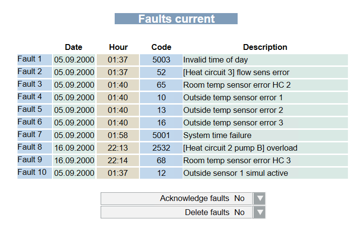
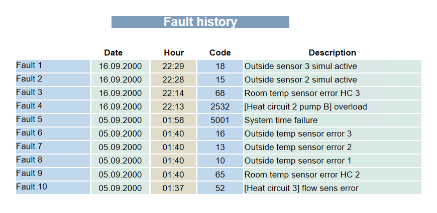
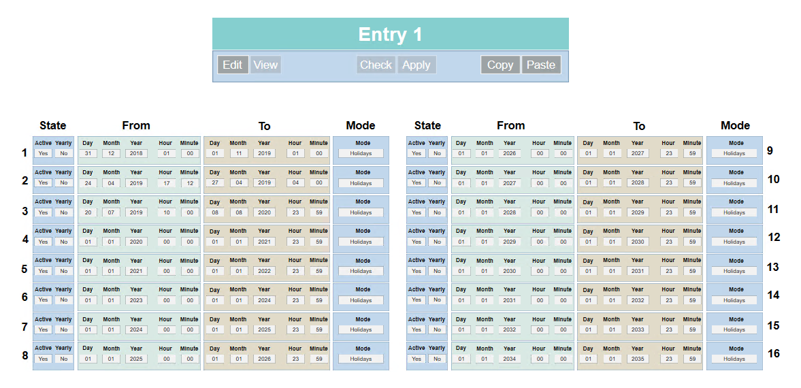
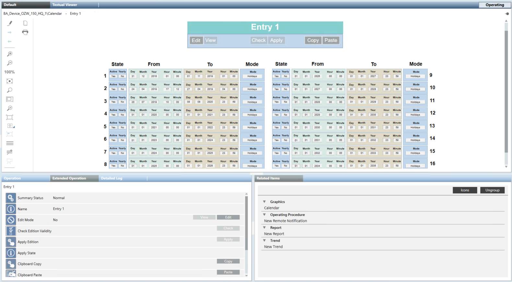
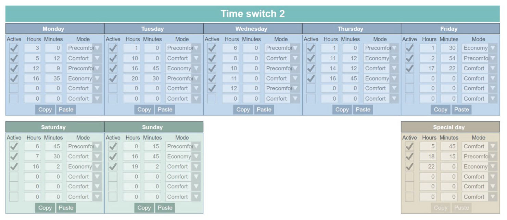
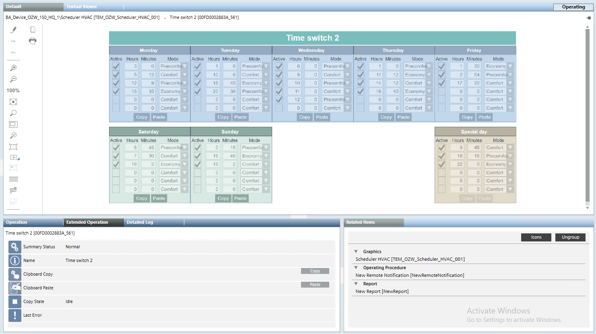

OZW Graphic Templates
The following graphic templates are provided with the installation of the OZW extension.
Fault Actual
It shows the current fault conditions (up to 10 events) for the selected object. A title line at the top of the page shows the represented type of condition. At the bottom, two control commands are available, to acknowledge and delete the pending events.

Fault Historical
It shows the past (deleted) fault conditions (up to 10 events) for the selected object.

Calendar
It shows the Mode selection for as many as 16 time periods, organized in two columns.

You can Copy and Paste the entire calendar settings from one object to another. The default display is View, and you can click Edit to modify the settings. Then, click Check to verify the change (check the Active flag), and finally Apply.
NOTE: When you select an object in System Browser, the same commands are available in the Extended Operation tab.

Scheduler BW
Scheduler HVAC
Scheduler Jalousie
Scheduler On Off
Scheduler Scene
This template is available in different variants related to the Mode states of different objects. The functionality is the same for all of variants and shows the Mode selection for a typical week (five weekdays Monday to Friday, Saturday and Sunday) and one special day.

You can Copy and Paste the entire week schedule or individual days. To do this, proceed as follows:
- Select the main title to operate at week level, and then use the commands in the Extended Operation tab. You can Copy the schedule from one object, then select another object and Paste the content into it. In case of error, check the Last Error condition in the Extended Operation tab.
- Select the day title to operate at day level. In this case you can use the commands in the graphic or the Extended Operation tab.
